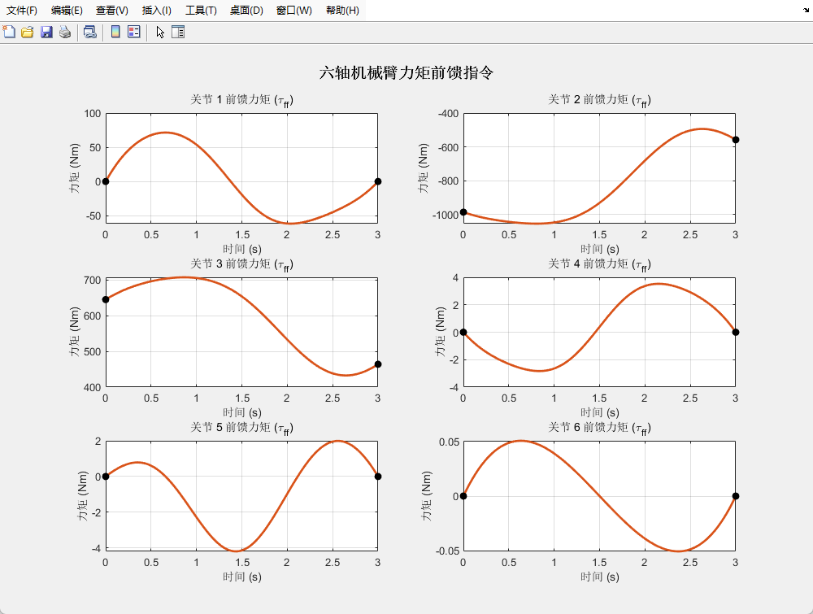

研发一套低开销六轴机械臂控制算法
基于六轴球形腕（满足 Pieper 准则）构型，设计了位置与姿态解耦的代数解析逆解算法（几何法推导前三轴，旋转矩阵提取后三轴），并完善了奇异点的姿态保护逻辑；正向运动学基于标准齐次变换矩阵连乘实现。
在关节空间内引入五次多项式（Quintic Polynomial）结合时间归一化进行轨迹生成。在 50Hz 闭环周期下，确保了位置速度加速度运动状态的连续，消除了伺服系统的机械刚性冲击。
通过前向运动学计算连杆质心加速度，结合后向动力学内推连杆受力，实时计算六轴前馈力矩，实现高精度前馈补偿。
